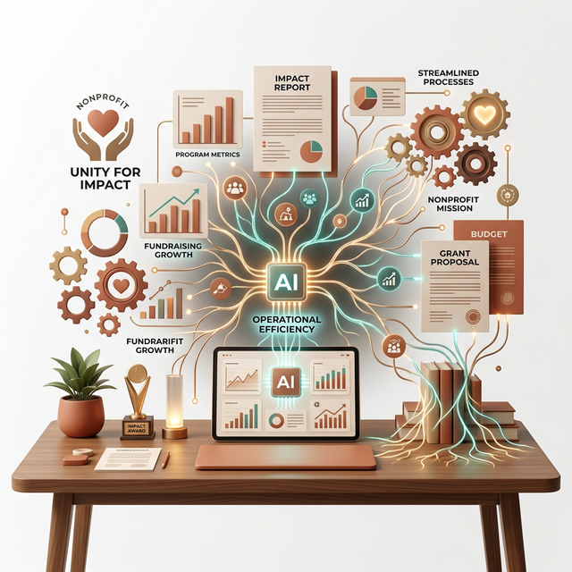
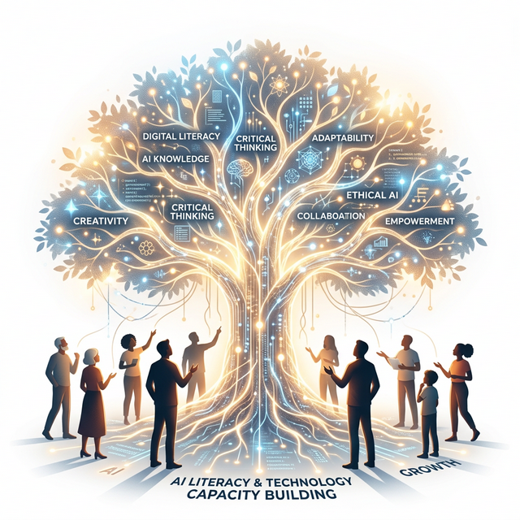
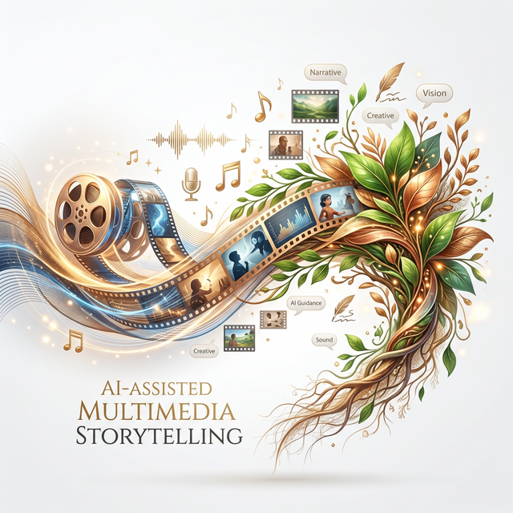

IT Systems & Tech Enablement
We help NGOs and community organizations translate complex technology challenges into sustainable, governed systems that empower their teams and learners.

precision_manufacturing AI-Powered Operations
Integrating AI directly into day-to-day nonprofit workflows—from documentation and reporting to deep-dive research. We focus on practical efficiency that lets teams focus on impact.
- check_circle Streamlined documentation and reporting processes.
- check_circle AI-assisted research and data synthesis modules.
- check_circle Custom knowledge management frameworks.

school AI Literacy & Capacity Building
Building internal familiarity with emerging AI technologies. We design learning sessions that map organisational workflows to AI opportunities, ensuring technology serves the mission.
- check_circle Introductory AI sessions tailored for social sector teams.
- check_circle Workflow mapping and opportunity identification.
- check_circle Hands-on deliberate practice with emerging tools.

movie_edit Multimedia & Rapid Prototyping
Experimenting with AI-assisted video and audio creation. We enable teams to prototype educational materials and storytelling content quickly, without requiring massive production budgets.
- check_circle AI-generated images and narration for learning modules.
- check_circle Rapid prototyping of explanatory storytelling content.
- check_circle Resource-optimized multimedia creation workflows.
psychology Ready for a Strategic AI Shift?
We help you move from experimenting with AI to adopting it as a governed, mission-critical capability. Reach out to initiate a strategic dialogue on how AI can strengthen your foundational operations.
send Contact Us to Initiate Strategic Dialogue